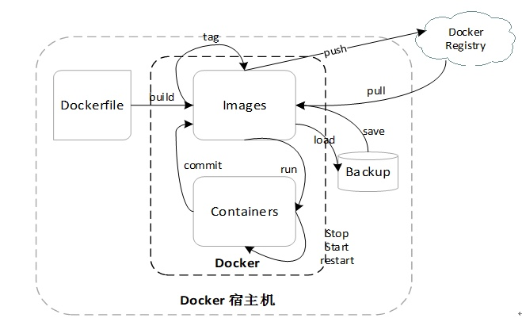

Docker 应用概述
根据官方的定义,Docker 是以Docker容器为资源分割和调度的基本单位，封装了软件运行时所需的所有运行环境，为开发者和系统管理员设计的，用于构建，发布和运维分布式的平台。它是一个跨平台，可移植并且易用的容器解决方案。Docker采用Go语言编写，并遵从Apache 2.0 协议。Docker可在容器内快速自动化地部署应用，并且通过Linux系统的操作内核技术(namespace, cgroup)实现资源隔离与安全保障。
下图是Docker的命令结构图:

其中我们可以看到命令主要围绕的是镜像(Images), 容器(Containers)展开。其中包括:
- 1 从Docker Registry 拉取(pull)镜像到本地，或者将制作好的镜像上传(push)到远程库。
- 2 Images 通过run 命令启动并生成Containers 实例，而如果修改后的Containers如果需要保存，则可以通过commit命令生成新的镜像(注意: commit命令一般不用于新镜像的制作，新镜像的制作一般由Dokcerfile 进行制作.)
- 3 Containers 可以进行启动(start), 停止(stop), 重启(restart)容器进程等操作。
- 4 Images 可以通过save命令进行备份,相应的，可以通过load命令将备份好的文件加载成为镜像。
- 5 当然除了以上命令，还有docker info, docker images, docker inspect, docker exec 等其他常用命令，许多文档都有相应介绍，由于篇幅问题不在详述。
下面我们主要来说说我们今天的主人公: 利用Dockerfile 快速自动地构建你想要的镜像。
Dockerfile
Dockerfile 是docker用于构建镜像的文本文件，它描述了组装镜像的步骤。
Dockerfile 的指令都是单独执行的。除了FROM 指令以外，每一条指令的执行都是在其上一条指令所生成镜像的基础上执行，每一条指令都会基于原来的镜像生成一个新的镜像层。Dockerfile所生成的最终镜像就是在基础镜像叠加一层一层的镜像所组建的。为了提高构建镜像的速度，Docker daemon会缓存构建中的中间镜像，当一个镜像从基础镜像开始构建时，会将Dockerfile的下一条构建命令与基础镜像的所有子镜像作比较，如果有一个子镜像是由相同的指令生成的，则会命中缓存，直接使用该子镜像，而不会在生成一个中间镜像。比较特殊的是 COPY指令和ADD这两个拷贝指令还会比较拷贝的文件夹内容是否相同，如果只是命令相同，但是文件夹内容不相同，则不会使用缓存镜像，从而生成另外一个新的中间镜像。
我们先来看看Dockerfile 都有哪些指令可以使用:
1 FROM 格式FROM <image> 或者 FROM <image> <tag>
FROM 指令作为Dockerfile 的第一条构建指令，其功能是为后面的指令提供基础镜像，基础镜像可以选择任何有效的镜像。Dockerfile 中可以有多个FROM 指令，对应的也会构建多个镜像(多阶段构建的应用)。参数tag 如果为空，则默认是latest，如果指定的tag镜像不存在，则直接返回错误。2 ENV 格式ENV <key> <value> 或者 ENV <key>=<value>
ENV 指令的作用是为镜像声明环境变量。ENV 所声明的环境变量可以供后面的指令使用(如COPY, ADD, WORKDIR等),使用格式为${var}, $var。3 WORKDIR 格式WORKDIR <path>
WORKDIR 是为镜像设置当前工作目录。Dockerfile 与linux shell 有很多相同之处，必须提到的一点是，如果单纯将Dockerfile 当成linux shell 来写，可能会犯很多错误，举个例子:1
2RUN cd /app
RUN echo "hello world" > helloworld.txt上面的Dockerfile 命令将会报错找不到helloworld.txt，或者/app/helloworld.txt 里面内容根本不是”hello world“。前面我们讲到，每运行一个指令，会生成一个新的中间镜像，上面的例子中，当第一个RUN指令运行cd命令后，仅仅是属于当前进程中的一个内存状态变化。而执行第二个RUN指令时，根据Dockerfile 的分层存储机制，启动的是一个全新的容器进程，自然不可能继承第一层的内存状态变化。所以如果需要改变各层之间的工作目录，则需要使用WORKDIR
4 COPY 格式COPY <src> <dest>
COPY 指令用于将主机的资源文件在生成镜像的时候拷贝到镜像中。src 可以是指定多个源，但其路径必须在上下文中。此外src可以使用通配符，例如:
COPY ./home/con* /mydir/ 这样以con 开头的文件拷贝到都被拷贝到目标目录中。值得注意的是，如果源路径是一个目录，那么目录下的内容都会被拷贝到镜像中，但是目录本身不会被拷贝(这点与linux 的cp命令有区别)； dest 必须是目标镜像中的绝对路径和或者基于WORKDIR 指令的相对路径，同样目标路径也可以使用通配符。
若目标路径是一个目录，则必须以符号 / 结束，如果目标镜像路径不存在，则在构建时创建完整的路径。5 ADD 格式ADD <src> <dest>
ADD 命令与COPY命令很相似。ADD的src可以是一个指向网络文件的URL，同事src还可以是指向本地的压缩归档文件，在拷贝的过程中会被压缩提取。6 RUN 格式 RUN <command> (shell格式)或者 RUN “executable”, “param1”, “param2”
RUN命令的两种格式表示在容器中的两种运行方式。当使用shell 格式的时候，则通过/bin/sh -c 的方式运行。而当使用的是exec格式的时候，命令是直接以JSON的方式传递给Docker 解析执行。因为exec不会在shell中执行，故环境变量的参数不会被替换。如果想以exec的方式调用shell程序，可以写成CMD[“sh”,”-c”,”echo”,”${HOME}”。如果想利用RUN命令一次运行多条执行，可以利用符号 && 进行连接。如下面的例子:1
2
3RUN sh -c "yum -y install gcc \
&& yum -y install gcc-c++\
&& yum -y install make"
- 7 CMD CMD指令有三种格式:
<1>CMD <command> （shell格式）
<2>CMD “executable”,”param1”,”param2”
<3>CMD “param1”,”param2”
CMD的主要作用看起来也是主要执行一些命令，但CMD指令与RUN指令不同，RUN指令主要是在构建镜像的时候执行命令，CMD在构建的时候并不执行任何命令，而是在启动容器时将CMD指令作为第一条执行的命令。但是如果用户在命令行运行docker run 命令时同时指定了命令参数，则会CMD指令中的命令会被覆盖。并且需要强调的一点就是Dockerfile中虽然可以有多条CMD命令，但是只会有最后一条CMD命令有效。
8 ENTRYPOINT 格式ENTRYPOINT <command>（shell格式）或者ENTRYPOINT[“executable”,”param1”,”param2”] (exec格式，推荐格式)
ENTRYPOINT 与 CMD指令的用途相似，都是在镜像启动时执行命令，但它们又有些不同:
当使用shell格式时，ENTRYPOINT 会忽略docker run 以及 CMD 所传递的参数，并且此进程会运行在/bin/sh -c 的进程中，成为/bin/sh -c 的子进程，这意味着ENTRYPOINT这条指令的进程号不会是1，且不能接受Unix信号，即如果执行 docker stop <container>命令时，ENTRYPOINT进程无法无法接收SIGTERM 信号。而使用exec格式时，ENTRYPOINT 无需shell进程，直接让Docker 可执行程序成为PID为1的进程。并且docker run 传入的命令参数可以覆盖CMD的指令内容，并附加到ENTRYPOINT指令的参数中。其实从ENTRYPOINT和CMD的对比中可以看出CMD既可以是参数也可以是命令，而ENTRYPOINT只能是命令，docker run提供的命令参数可以覆盖CMD，但却不能覆盖ENTRYPOINT 的参数。
针对CMD和ENTRYPOINT有以下的使用建议:如果Docker镜像的用途是作为应用程序或者服务，例如Mysql 则使用EXEC格式的ENTRYPOINT指令，启动命令相对固定，只需要提供额外的参数进行替换便可启动容器。而如果想为容器设置启动命令，则使用CMD指令，通过docker run 指定命令参数进行替换。
除此之外，如果我们使用了ENTRYPOINT，但是我们又想设置启动命令，则可以使用 –entrypoint 参数，可以同时覆盖CMD以及ENTRYPOINT指令.9 EXPOSE EXPOSE <port1> <port2> …
EXPOSE指令的作用是声明容器提供服务的端口，这仅仅是一个声明，并不会在运行容器时因为这个声明而开启所声明的端口。使用EXPOSE有两个好处:方便容器的使用者理解容器服务的守护端口，方便做端口映射，另一个则是使用 docker run -P 的时候，能够随机映射EXPOSE声明的端口。要特别注意的是，我们平时映射端口使用 docker run -p <宿主端口>:<容器端口> 命令，而EXPOSE只是暴露端口的声明，并不会做端口映射。
Dockerfile 的最佳实践
一个例子(基于alpine构建redis镜像 ):
1
2
3
4
5
6
7
8
9
10
11
12
13
14
15
16
17FROM alpine:3.11.6
#VOLUME "/data"
WORKDIR /opt
RUN mkdir -p /opt/open_source/redis
WORKDIR /opt/open_source/redis
COPY ./redis ./redis-start.sh ./
RUN sed -i "s/dl-cdn.alpinelinux.org/mirrors.aliyun.com/g" /etc/apk/repositories \
&& apk update \
&& apk upgrade \
&& apk add --no-cache --virtual build-deps \
gcc \
make \
linux-headers \
musl-dev
RUN make && make install
EXPOSE 6379
ENTRYPOINT ["sh","./redis-start.sh"]
最佳实践的一些建议:
Dockefile的编写的几个基本准则:
1)构建的镜像体积尽量小。
2)构建的镜像层数尽量少。
3)构建过程尽量使用缓存，提供构建速度。
4)保持dockerfile的可读性，可维护性。
关于FORM语句
FROM 语句中应该选择合适的基础镜像，且尽量明确版本。如果是基于操作系统的镜像，现在主流的镜像有alpine, debian(官方推荐), centos，ubantu等，在选择操作系统镜像时，我们一般考虑的准则是:1.普遍适用。2.越小越好。目前alpine 支持大多数linux发行版，且经过深度优化，成为了更多人选择的操作系统基础镜像，目前大概只有5M左右(与之相比ubantu有200M左右)，且拥有非常好的包管理机制。关于RUN语句
将复杂的或者长的RUN语句利用符号”\“分割成多行，有利于保持Dockerfile 的可读性与维护性，且如果将多个RUN语句合成一个，有利于减少镜像层数。
RUN 语句如果使用apt-get时需要特别注意:
如果将apt-get update放在独立的一条的RUN语句中会导致缓存问题以及后续的apt-get install 命令安装软件可能失败。举个例子:
原来的dockerfile安装了nginx1
2
3FROM ubuntu:14.04
RUN apt-get update
RUN apt-get install -y nginx后续你想再安装redis
1
2
3FROM ubuntu:14.04
RUN apt-get update
RUN apt-get install -y nginx redis由于docker的缓存机制，此次的 apt-get update 并未真正执行，导致install 的软件包可能是过时的包。
所以如果在RUN命令中如果使用apt-get update，最好的方式是与apt-get install 一起使用，并且参数通过字母排序(避免安装重复包):1
2
3
4FROM ubuntu:14.04
RUN apt-get update \
&& RUN apt-get install -y nginx \
redis
关于COPY和ADD语句
COPY 与 ADD很相似，都主要是提供拷贝功能。但是建议使用COPY命令，因为COPY命令的透明度高。ADD 命令除了拷贝功能以外还增加了远程拷贝功能以及文档提取功能，对于远程拷贝，可以使用curl或wget代替,来减少镜像的层数。如下:1
2
3ADD http://xxx/xxx/bigdata.tar.xz /data
RUN tar -xJf /data/bigdata.tar.xz -C /data
RUN make -C /data/ all建议:
1
2
3
4RUN mkdir -p /data \
&& curl -SL http://xxx/xxx/bigdata.tar.xz \
| tar -xJC /data \
&& make -C /data all关于WORKDIR语句
为了保持可读性与维护性，建议WORKDIR使用绝对路径。少使用诸如RUN cd xxx && do someting，这样会增加排查问题的成本。使用.dockerignore
使用.dockerignore 文件来排除构建不需要的文件与目录，例如前端文件目录: node_modules。使用多阶段构建(multi-stage build)
场景1:
在构建镜像的过程中我们会遇到编译环境，运行环境。编译环境主要把代码编译成可执行的二进制文件，而运行环境主要运行编译环境产出的可执行文件。如果使用传统的docker 构建，编译环境会产出一些多余的中间文件，而大多数情况下，这些中间文件有悖于尽可能减小镜像体积的准则。而在docker 17.05版本后，支持了多阶段的构建方式，利用多个FROM语句，可以将一个编译环境的最终产物，拷贝到运行环境。并且最终形成的运行镜像，不会附带编译环境产出的中间文件。
示例:Java项目:编译环境(jdk+gradle) + 运行环境(jdk)1
2
3
4
5
6
7
8
9
10FROM alpine-gradle:latest as builder
RUN mkdir -p /opt/otsdata/example/
WORKDIR /opt/otsdata/example
COPY ./example_project/ /opt/otsdata/example/
RUN gradle build
FROM anapsix/alpine-java:8u202b08_jdk
COPY --from=builder /opt/otsdata/example/build/libs/example-0.0.1-SNAPSHOT.jar /opt/otsdata/example/
WORKDIR /opt/otsdata/example
EXPOSE 8080
ENTRYPOINT ["java", "-jar", "example-0.0.1-SNAPSHOT.jar"]场景2:
Springboot 从2.3.0.M1版本开始 提供了layertools 工具结合docker多阶段构建的功能来加快镜像的构建效率。
先来说一下layertools:
众所周知，spring boot是以fat jar进行构建打包的，程序开发到一定程度，jar包相对比较大(80M 100M)。对于一个程序来说，业务代码的修改频率远高于依赖库的修改频率，且一旦业务代码有变化，就需要整个重新打包上传，这无疑大大增加了网络的压力(如果镜像服务走的是公网将会更加糟糕)，docker 镜像本来就是分层结构，有没有可能做到我只上传修改的镜像层，而不是修改几行代码就整层进行上传呢？对于程序来说，，能不能从这方面切入呢？
layertools 正好为不同更新频率的内容提供了分离机制,在这基础上，docker 镜像利用此种特性，大多数情况下只需要上传已经分离出来的业务代码层，而不需要每一次都进行整一个镜像的重新上传。
jar包分层前后结构对比:1
2
3
4
5
6
7
8
9
10
11
12
13分层前
META-INF/
MANIFEST.MF
org/
springframework/
boot/
loader/
...
BOOT-INF/
classes/
...
lib/
...1
2
3
4
5
6
7
8
9
10
11
12
13
14
15
16分层后:
META-INF/
MANIFEST.MF
org/
springframework/
boot/
loader/
...
BOOT-INF/
layers/
<name>/
classes/
...
lib/
...
layers.idx其中分层后包括以下四种:
– dependencies(依赖项)
– snapshot-dependencies(用于快照依赖项)
– resources(用于静态资源)
– application(应用程序代码和资源)使用示例:
1）在springboot 的pom.xml 加上如下配置:1
2
3
4
5
6
7
8
9
10
11<build>
<plugins>
<plugin>
<groupId>org.springframework.boot</groupId>
<artifactId>spring-boot-maven-plugin</artifactId>
<configuration>
<layout>LAYERED_JAR</layout>
</configuration>
</plugin>
</plugins>
</build>1) 重新打包,并验证:
1
2重新打包
mvn clean package1
2验证
java -Djarmode=layertools -jar target/demo-0.0.1-SNAPSHOT.jar list输出:

3）编写dockerfile
1
2
3
4
5
6
7
8
9
10
11
12
13FROM anapsix/alpine-java:8u202b08_jdk as builder
WORKDIR /opt/otsdata/layer_example
ARG JAR_FILE=./demo/target/demo-0.0.1-SNAPSHOT.jar
COPY ${JAR_FILE} demo.jar
RUN java -Djarmode=layertools -jar demo.jar extract
FROM anapsix/alpine-java:8u202b08_jdk
WORKDIR /opt/otsdata/layer_example
COPY --from=builder /opt/otsdata/layer_example/dependencies/ ./
COPY --from=builder /opt/otsdata/layer_example/snapshot-dependencies/ ./
COPY --from=builder /opt/otsdata/layer_example/resources/ ./
COPY --from=builder /opt/otsdata/layer_example/application/ ./
ENTRYPOINT ["java", "org.springframework.boot.loader.JarLauncher"]
总结
至此，我们学习了dockerfile 的基本语法和如何写简洁高效的dockerfile。对于我而言，我觉得dockerfile的编写工作给我一种linux shell思维+docker分层结构的思维的结合体，我觉得只要深刻了解这两方面的知识，那么编写dockerfile将会变得简单。